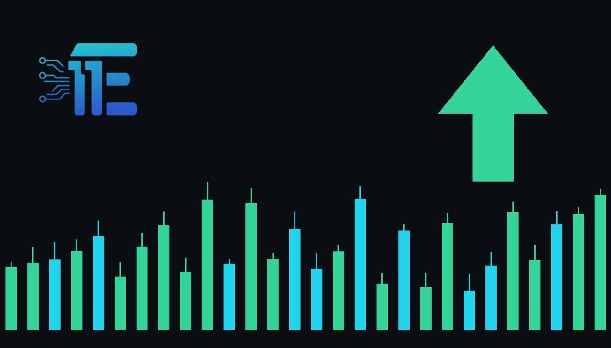

Investors Rush To Gold As US Dollar Tanks After Midtermsអ្នកជួញដូរងាករកមាស ខណៈដុល្លារអាមេរិកធ្លាក់ចុះក្រោយការបោះឆ្នោត midterm
XAU/USD impact: ▲ Bullishផលប៉ះពាល់លើ XAU/USD: ▲ ឡើង

Investors rushed to gold as the US dollar dropped following the midterm elections. This decline in the currency supported safe-haven demand for precious metals.
អ្នកជួញដូរបានងាកមកកាន់មាស ខណៈដែលតម្លៃប្រាក់ដុល្លារអាមេរិកបានធ្លាក់ចុះបន្ទាប់ពីការបោះឆ្នោត midterm។ ការធ្លាក់ចុះនៃប្រាក់ដុល្លារនេះបានជួយជំរុញដល់តម្រូវការទ្រព្យសុវត្ថិភាពសម្រាប់លោហៈមានតម្លៃ។
Investors rushed to gold as the US dollar sank following the recent US midterm elections. Market participants are now watching upcoming payrolls data and the Federal Reserve for the next potential move.
អ្នកជួញដូរបានងាកមកកាន់មាសយ៉ាងច្រើន ខណៈដែលប្រាក់ដុល្លារអាមេរិកបានធ្លាក់ចុះបន្ទាប់ពីការបោះឆ្នោត midterm នៅសហរដ្ឋអាមេរិក។ បច្ចុប្បន្ន អ្នកចូលរួមក្នុងទីផ្សារកំពុងតាមដានទិន្នន័យការងារ និងធនាគារកណ្តាល Fed សម្រាប់ការសម្រេចចិត្តបន្ទាប់។
The drop in the US dollar served as the primary transmission channel, as a weaker currency makes dollar-denominated assets like gold more attractive to holders of other currencies. Additionally, shifts in political expectations can influence broader Treasury yields and interest rate outlooks, altering the opportunity cost of holding non-yielding bullion.
ការធ្លាក់ចុះនៃប្រាក់ដុល្លារអាមេរិកបានដើរតួនាទីយ៉ាងសំខាន់ ព្រោះប្រាក់ដុល្លារខ្សោយធ្វើឱ្យទ្រព្យសម្បត្តិដែលគិតជាប្រាក់ដុល្លារដូចជាមាសកាន់តែមានភាពទាក់ទាញសម្រាប់អ្នកកាន់កូប្យគូររូបិយប័ណ្ណផ្សេងទៀត។ លើសពីនេះ ការផ្លាស់ប្តូរការរំពឹងទុកនយោបាយអាចមានឥទ្ធិពលលើទិន្នផលរតនាគារ និងទស្សនវិស័យអត្រាការប្រាក់។
A weaker US dollar and lower yields typically support gold by reducing the cost of holding the precious metal and boosting safe-haven demand. Conversely, stronger economic data or a more hawkish stance from the Fed regarding future rate decisions could pressure prices by strengthening the dollar.
ប្រាក់ដុល្លារអាមេរិកខ្សោយ និងអត្រាការប្រាក់ទាបជាទូទៅគាំទ្រដល់តម្លៃមាស ដោយសារការកាត់បន្ថយចំណាយលើការកាន់កាប់លោហៈមានតម្លៃ និងការជំរុញតម្រូវការទ្រព្យសុវត្ថិភាព។ ផ្ទុយទៅវិញ ទិន្នន័យសេដ្ឋកិច្ចខ្លាំង ឬជំហរតឹងរឹងពីធនាគារកណ្តាល Fed
Traders should closely monitor upcoming employment reports, statements from Fed officials, and further developments surrounding the political landscape. These factors will likely dictate the near-term trajectory of both the US currency and precious metals.
អ្នកជួញដូរគួរតែតាមដានយ៉ាងដិតដល់នូវរបាយការណ៍ការងារនាពេលខាងមុខ សេចក្តីថ្លែងការណ៍ពីមន្ត្រី Fed និងការវិវត្តនបន្តបន្ទាប់ជុំវិញស្ថានភាពនយោបាយ។ កត្តាទាំងនេះនឹងកំណត់ទិសដៅរយៈពេលខ្លីនៃប្រាក់ដុល្លារអាមេរិក និងលោហៈមានតម្លៃ។
Key takeawaysចំណុចសំខាន់ៗ
- Investors turned to gold as the US dollar weakened following the midterm elections.
- អ្នកវិនិយោគបានងាករកមាស ខណៈដែលប្រាក់ដុល្លារអាមេរិកបានចុះខ្សោយក្រោយការបោះឆ្នោត midterm។
- A weaker US dollar typically lowers the cost of holding precious metals, boosting demand.
- ប្រាក់ដុល្លារខ្សោយជួយកាត់បន្ថយចំណាយលើការកាន់កាប់លោហៈមានតម្លៃ និងជំរុញតម្រូវការមាស។
- Traders are closely watching upcoming payroll data and Fed policy signals for the next direction.
- អ្នកជួញដូរំពុងតាមដានទិន្នន័យការងារ និងសញ្ញាគោលនយោបាយពីធនាគារកណ្តាល Fed យ៉ាងយកចិត្តទុកដាក់។
Original commentary by THE MARKET CODE, based on public reporting from Yahoo! Finance: GC=F News. Written with the help of AI. Educational only, not financial advice.
មតិវិភាគដើមដោយ THE MARKET CODE ផ្អែកលើការរាយការណ៍សាធារណៈពី Yahoo! Finance: GC=F News។ សរសេរដោយមានជំនួយពី AI។ មាតិកាអប់រំប៉ុណ្ណោះ មិនមែនជាដំបូន្មានហិរញ្ញវត្ថុទេ។